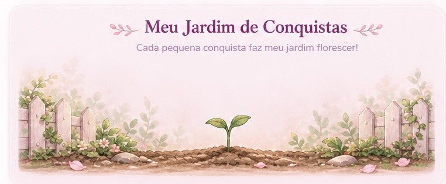

Olá, estudante!
Pequenos passos também fazem você florescer.
0
Tarefas no total
0
Concluídas
0
Pendentes
𓆝 𓆟 Meu progresso 𓆞 𓆝
0% concluído
Meu Jardim de Conquistas

Cada pequena conquista faz o jardim florescer.
Meu calendário de estudos
Dom
Seg
Ter
Qua
Qui
Sex
Sáb
Escolha um dia 🪷
⏱️ Hora de florescer!
Hora de estudar ♡
25:00
Um passo de cada vez!
♡ Minhas tarefas ♡
- Suas tarefas aparecerão aqui! 🌸
📚 Meu cantinho de anotações
Um espaço especial para guardar seus aprendizados. ♡
Seu caderninho está esperando suas primeiras anotações! 💗